The convergence of electric vehicle (EV) charging infrastructure with Battery Energy Storage Systems (BESS) represents a transformative approach to sustainable transportation and grid management. This integration addresses critical challenges in EV adoption while creating opportunities for enhanced grid stability, cost optimization, and renewable energy utilization1. As the global EV market continues to expand rapidly, with projections indicating significant growth in charging infrastructure requirements, the strategic implementation of BESS-coupled EV charging stations is becoming increasingly essential for creating a resilient and economically viable charging ecosystem.
The integration of BESS with EV charging stations serves multiple strategic objectives: enhancing EV charger reliability, reducing carbon emissions, improving the stability of charging infrastructure, and enabling more efficient utilization of renewable energy sources. Countries including the United States, China, and Germany have demonstrated high potential for adopting BESS-coupled DC EV charging systems, positioning themselves as leaders in this technological convergence.
Technical Architecture and Key Components
Core System Design
A BESS-integrated EV charging station comprises several critical components working in harmony. The battery energy storage system acts as a large-scale rechargeable battery, storing electricity when it's abundant and releasing it during peak demand periods. The system includes sophisticated battery management systems, power electronics, inverters, and intelligent control systems that enable optimal energy flow between the grid, storage, and charging infrastructure.
The integration typically involves DC fast chargers paired with substantial battery capacity. For example, successful implementations have featured Delta Electronics Fast EV Chargers initially set at 50 kW but scalable up to 150 kW, paired with 52 kWh BESS for effective grid impact management. More advanced systems can provide up to 400 kW per plugin through solutions like Exicom 's Harmony boost system.
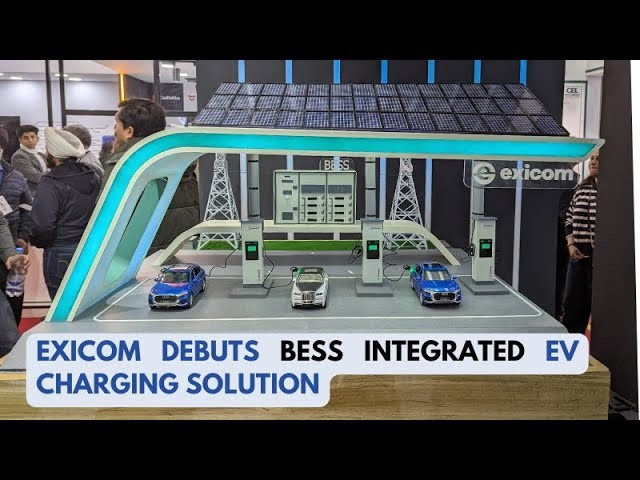
Smart Energy Management Systems
Modern BESS-integrated charging stations incorporate advanced Energy Management Systems (EMS) that enable sophisticated control strategies. These systems utilize artificial intelligence and machine learning algorithms to optimize charging patterns, predict energy demand, and manage the complex interplay between renewable generation, grid supply, and charging requirements.
The AI-driven systems can reduce peak demand by approximately 16% for 1.5 million EVs, with even greater efficiency gains as EV adoption scales. This optimization occurs through intelligent load balancing, dynamic pricing responses, and predictive analytics that anticipate charging patterns based on historical data and real-time conditions.
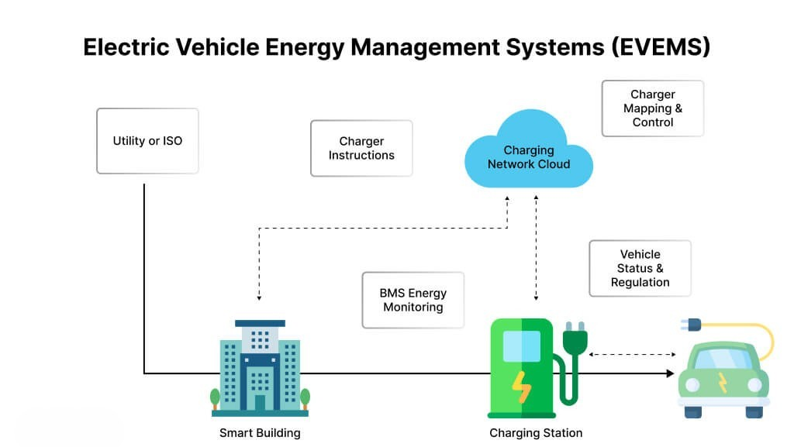
Operational Benefits and Value Propositions
Grid Stability and Peak Shaving
One of the most significant advantages of BESS integration is the ability to provide grid stability through peak shaving capabilities. With BESS integration, charging stations can store energy during off-peak times and release it during peak demand periods, reducing pressure on the grid and improving overall grid stability. This "peak shaving" approach can delay the need for costly grid expansions or transformer upgrades while maintaining reliable service delivery.
Research from Delft University of Technology demonstrates that adding a battery system to a fast-charging station can reduce the grid connection size by up to 80% in some scenarios. This substantial reduction in grid connection requirements leads to lower grid fees and peak power costs while minimizing the need for expensive grid infrastructure upgrades.
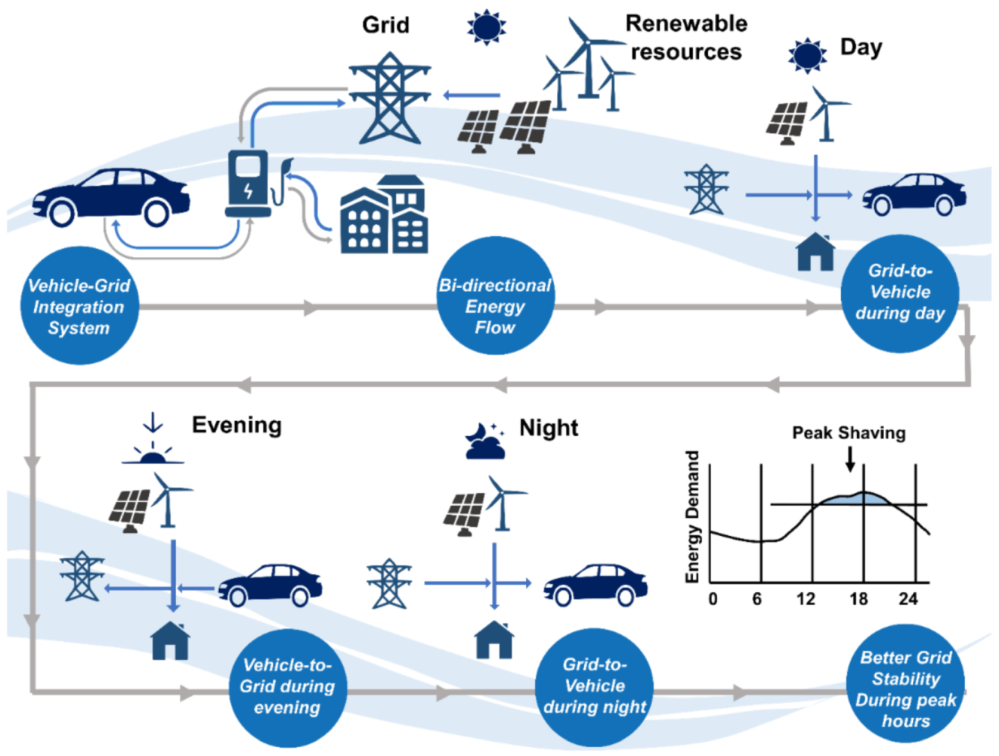
Cost Optimization and Energy Arbitrage
BESS-enabled charging stations leverage energy shifting strategies, storing power during low-demand periods when electricity prices are lower and using that stored energy during high-demand times when prices are higher. This energy arbitrage approach results in significant cost savings for charging station operators and potentially lower charging costs for consumers.
A practical case study from Ontario, Canada, demonstrates the economic viability of this approach. A gas station implementing a 100 kWh BESS charged by a 10-kW solar PV array achieved annual savings of US$23,966, with a payback period of approximately 4 years. The system cost of US$95,000 was offset by reduced peak hour costs and optimized energy utilization patterns.
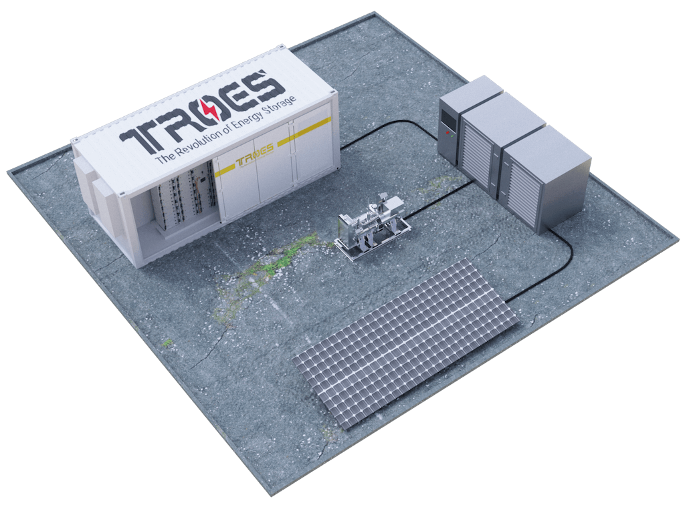
Enhanced Charging Capacity and Reliability
BESS integration significantly increases charging capacity beyond grid limits, ensuring that EVs can charge efficiently even when grid supply is constrained. This capability is particularly beneficial for fleets and high-traffic charging hubs where multiple vehicles require simultaneous charging. The stored energy provides a reliable power source that reduces the risk of power surges and other issues that could damage vehicles or charging systems.
Integration with Renewable Energy Sources
Solar and Wind Power Integration
The integration of BESS with renewable energy sources creates a synergistic relationship that maximizes clean energy utilization. BESS can store energy from various sources, including solar photovoltaics and wind systems, enabling flexibility in energy sourcing and ensuring availability when primary renewable sources fluctuate. This integration stabilizes energy from renewable sources, reduces outages, and decreases reliance on peak-power generating plants.
Renewable-based charging stations can operate in both grid-connected and standalone configurations. For standalone systems, BESS becomes essential for providing continuous power supply when renewable generation is insufficient. The transmission system plays a vital role in ensuring balance between consumption and production, with BESS serving as the critical buffer.
Smart Grid Integration and V2G Capabilities
Advanced BESS systems support Vehicle-to-Grid (V2G) technology, enabling bidirectional energy flow where electric vehicles can supply energy back to the grid during peak demand periods. This capability transforms EVs from simple energy consumers into distributed energy resources that contribute to grid stability and resilience.
IEEE 2030.5 (Smart Energy Profile 2.0) serves as a critical communication standard facilitating secure and efficient data exchange between utilities, distributed energy resources, and grid-connected devices including EV chargers. This protocol enables dynamic load control, allowing utilities to manage energy resources while supporting renewable energy integration and demand response programs.
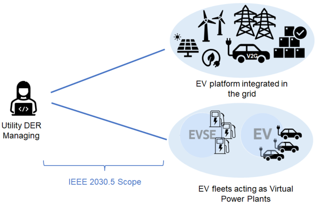
Safety Standards and Regulatory Framework
Safety Requirements and Compliance
The deployment of BESS-integrated EV charging systems requires adherence to comprehensive safety standards. The Central Electricity Authority (Cea) has issued draft guidelines specifying that chargers used for battery energy storage systems must be specifically designed to match battery chemistry, with systems built with two-fault tolerance ensuring safe operation even after separate faults occur.
Critical safety measures include fire and explosion protection at cell, module, container, and site installation levels. Battery management systems must monitor and record voltage, temperature, current, and thermal runaway at both cell and module levels, with automatic shutdown capabilities when parameters exceed manufacturer specifications.
International Standards and Interoperability
EV charging standards ensure compatibility and safety across different vehicle models and charging equipment. Key standards include IEC 61851-1 covering general safety requirements for electric vehicle conductive charging systems, and various regional standards like SAE J1772 for North American markets. These standards promote interoperability across vehicle manufacturers and charging infrastructure providers, fostering widespread EV adoption.
The importance of standardization extends beyond vehicle-to-charger connections to encompass grid integration protocols. Standards organizations continuously develop frameworks ensuring that BESS-integrated charging systems can communicate effectively with utility grids while maintaining safety and operational efficiency.
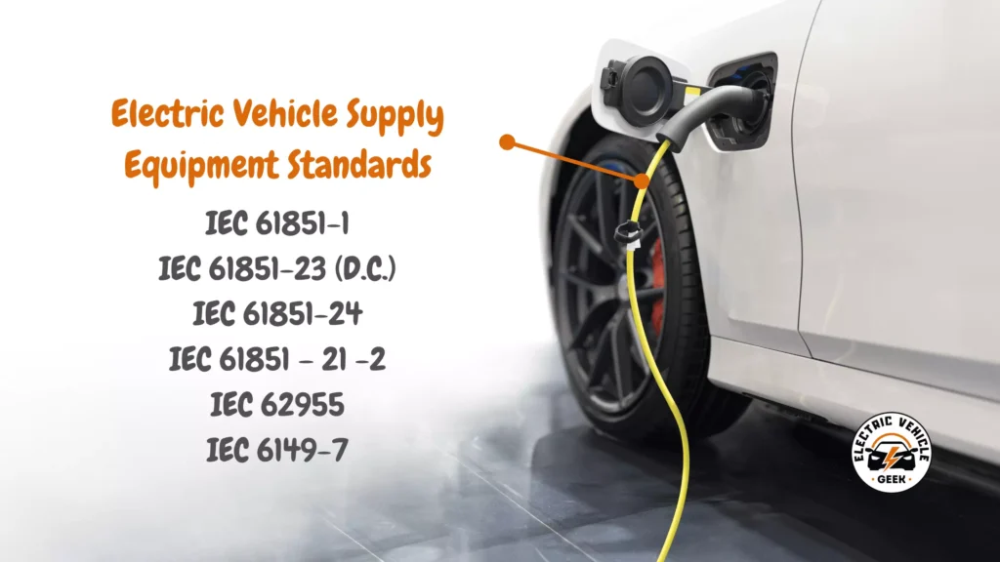
Economic Models and Financial Considerations
Investment and Revenue Structures
The economic viability of BESS-integrated EV charging infrastructure depends on achieving high utilization rates to justify substantial initial investments. While BESS adds complexity and upfront costs compared to traditional charging stations, the long-term benefits through peak shaving, load balancing, and energy arbitrage can provide compelling returns on investment.
Financial models for EV charging infrastructure typically evaluate performance from multiple perspectives: charging station owner-operator, external project partners, state or local government entities, and total project performance. Key financial metrics include net present value (NPV), internal rate of return (IRR), and discounted payback periods, with additional considerations for revenue sharing between partners and subsidy structures.
Business Model Innovation
Innovative financing approaches like ABB 's BESS-as-a-Service model eliminate upfront capital expenditure requirements, making advanced energy storage accessible to more operators. These service models include comprehensive hardware, software, and support services, enabling businesses to implement BESS solutions without significant initial investment while accessing sophisticated energy management capabilities.
The revenue potential extends beyond traditional charging fees to include grid services, energy arbitrage opportunities, and renewable energy certificate sales. BESS systems can participate in ancillary service markets, providing frequency regulation and grid support services that generate additional revenue streams.
Global Implementation Case Studies
Americas Region
EverCharge and PassKey Inc. collaboration at Houston Airport demonstrates successful BESS integration using SmartPower technology for effective load balancing and intelligent power allocation. The success of this initiative has led to expansion plans across multiple airports, showcasing the scalability of BESS-integrated charging solutions.
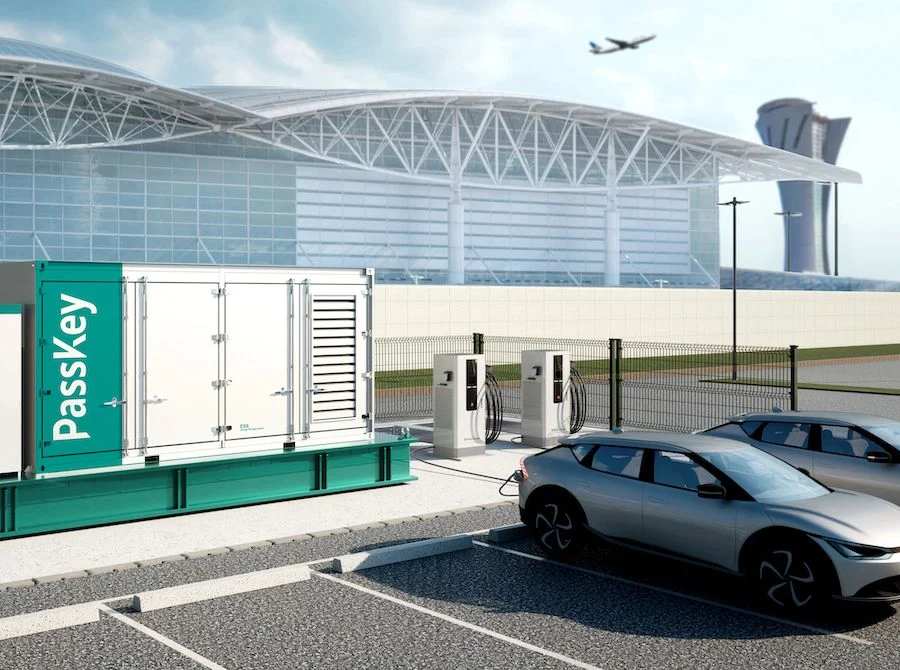
Electrify America represents a large-scale implementation with over 150 deployed BESS solutions demonstrating grid stress reduction and solar canopy integration. The company aims to expand its network to 10,000 chargers by 2026, incorporating Tesla Power packs at over 100 California stations and planning 30 EV chargers equipped with BESS at the Port of Long Beach.
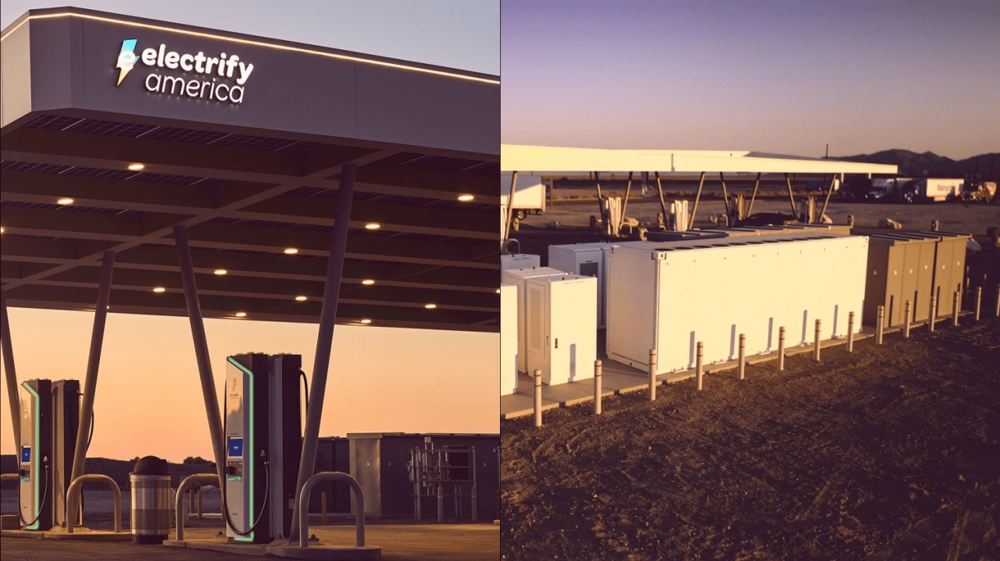
European Developments
Germany leads European BESS-EV integration efforts, with companies like Numbat securing over USD 10 million in funding and partnerships between Volkswagen and JOLT ENERGY creating battery storage-integrated EV charging parks. The UK has seen growing BESS deployment at EV charging stations, primarily addressing grid connection limitations that make BESS a cost-effective alternative to power line upgrades.
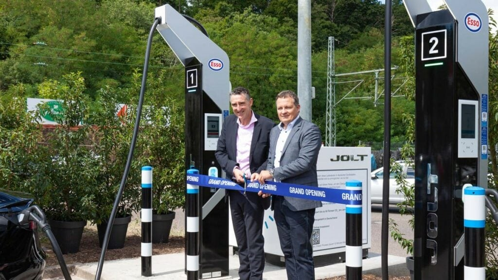
Asia-Pacific Progress
Malaysia inaugurated its first BESS-integrated public EV charging station in 2023, with plans for seven additional projects to boost EV charging infrastructure. China's first BESS charging station commenced operations in Ningde City in 2022, demonstrating the technology's viability in high-density urban environments.
Future Trends and Technological Developments
Artificial Intelligence and Optimization
The future of BESS-EV integration increasingly relies on artificial intelligence for optimal system operation. AI-driven algorithms can predict energy consumption patterns, optimize charging schedules, and manage the complex interplay between renewable generation, grid demand, and user requirements. These systems learn from historical data to improve performance continuously, ensuring maximum efficiency and cost-effectiveness.
Advanced AI applications include anomaly detection for extreme events, predictive maintenance capabilities, and dynamic load forecasting that accounts for weather patterns, user behavior, and grid conditions. The integration of machine learning with BESS operations enables more accurate energy flow predictions and better preventive maintenance scheduling.
Vehicle-to-Everything (V2X) Technologies
The evolution toward Vehicle-to-Everything (V2X) technologies expands the scope of BESS-EV integration beyond simple charging to comprehensive energy ecosystem participation. V2X encompasses Vehicle-to-Home (V2H), Vehicle-to-Building (V2B), and Vehicle-to-Load (V2L) services, enabling EVs to serve as mobile energy resources for various applications.
This technological convergence positions integrated BESS-EV systems as critical components of future smart cities, providing distributed energy storage, grid support services, and emergency power capabilities during outages or natural disasters.
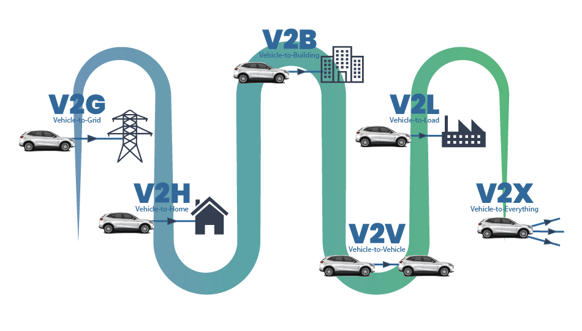
Challenges and Risk Mitigation
Technical and Operational Challenges
The integration of BESS with EV charging infrastructure presents several technical challenges including system complexity, interoperability requirements, and the need for sophisticated control systems. The increased complexity necessitates comprehensive digital tools for effective management, including real-time data analytics, AI-driven demand forecasting, and smart energy management systems.
Grid integration challenges include ensuring stable interconnection protocols, managing bidirectional power flows, and maintaining system reliability under varying load conditions. These technical requirements demand expertise in power electronics, grid codes, and energy management systems.
Economic and Market Risks
High upfront costs associated with BESS installation represent a significant barrier to widespread adoption. The economic viability depends heavily on achieving high utilization rates, favorable electricity pricing structures, and access to multiple revenue streams including energy arbitrage and grid services.
Market risks include regulatory changes, evolving technology standards, and competition from alternative solutions. Successful implementation requires careful analysis of local market conditions, regulatory frameworks, and long-term demand projections.
Recommendations for Stakeholders
For Infrastructure Developers
Infrastructure developers should prioritize strategic site selection focusing on high-traffic locations with favorable grid connection characteristics and renewable energy potential. Investment in comprehensive feasibility studies examining local electricity pricing, grid constraints, and demand patterns is essential for project success.
Collaboration with technology partners offering integrated solutions can reduce complexity and accelerate deployment. Consideration of service-based financing models can minimize upfront capital requirements while accessing advanced energy management capabilities.
For Policymakers
Regulatory frameworks should support BESS-EV integration through favorable interconnection standards, market mechanisms that reward grid services, and incentive programs for renewable energy integration. Standardization efforts should continue focusing on interoperability requirements and safety protocols.
Investment in research and development programs can accelerate technology advancement and cost reduction, while pilot projects can demonstrate viability and inform broader deployment strategies.
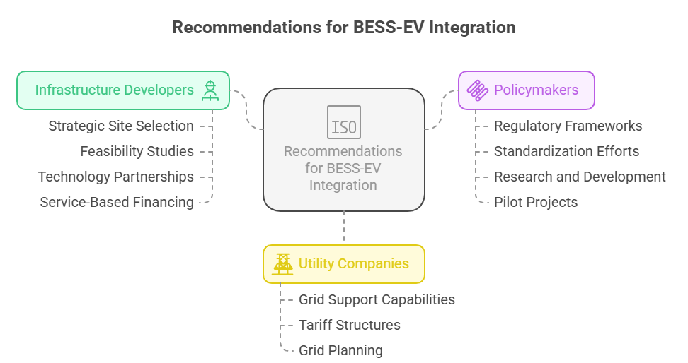
For Utility Companies
Utilities should engage proactively with BESS-EV integration to leverage grid support capabilities and demand response potential. Development of specific tariff structures and market mechanisms for energy storage services can create mutually beneficial arrangements with charging infrastructure operators.
Grid planning processes should incorporate BESS-EV systems as distributed energy resources, accounting for their potential contributions to grid stability and peak demand management.
Conclusion
The effective integration of EV charging stations with Battery Energy Storage Systems represents a critical advancement in sustainable transportation infrastructure. This technological convergence addresses fundamental challenges in EV adoption while creating opportunities for enhanced grid stability, cost optimization, and renewable energy utilization. As demonstrated through global case studies and technical implementations, BESS-integrated charging systems offer compelling value propositions for multiple stakeholders including infrastructure operators, utility companies, and end users.